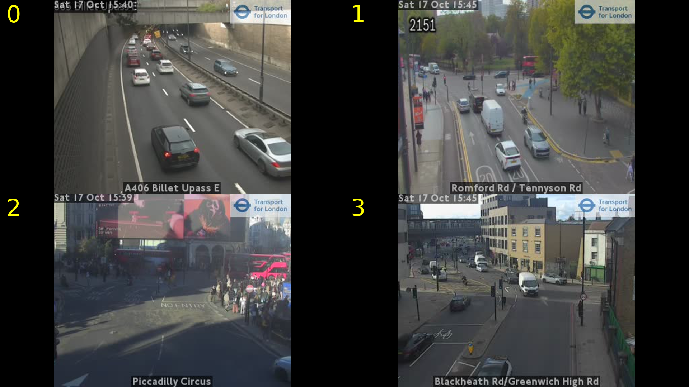
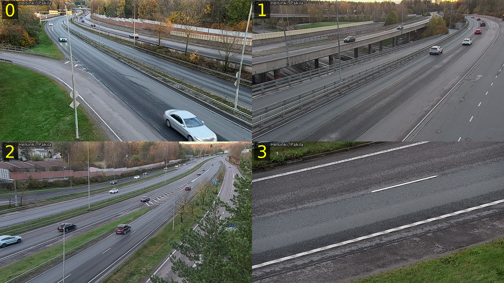

sehirharitasigateway.ibb.gov.tr/api/DUoq/api/Tkm/trafikKameralari (anonim token: /auth/anonim?lang=tr) → 635 kamera, GeoJSON.hls.ibb.gov.tr/tkm{1,2,4}/hls/{id}.stream/playlist.m3u8. Erişim testi: 3/22 → dakikalar içinde 0/24 → 0/3. Yani oynak/kararsız erişim.CameraImage.ashx): HTTP 200 ama 4/4 "kamera yok" yer tutucu görüntüsü (hepsi tam 7933 bayt).| Kaynak | Kamera | Erişilebilir | Ort. q_total |
|---|---|---|---|
| digitraffic | 6 | 6/6 | 5.2 |
| ibb_tkm | 3 | 3/3 | 2.83 |
| tfl_jamcam | 10 | 10/10 | 2.27 |
Vision puanları (data/vision_scores.json): TfL Piccadilly Circus 7,5 · TfL ortalama 7 · Digitraffic ortalama 7 (bir kare 2: sadece asfalt).

TfL montajı — 352×288 kaynak; montajda büyütüldüğü için bulanıklık gizleniyor.

Digitraffic Helsinki montajı — 1280×720 kaynak (A sınıfı, CC BY 4.0).
| Kaynak | Şehir | Sınıf | Kamera | Erişilebilir | Ort. skor |
|---|---|---|---|---|---|
| digitraffic | finland | A | 1854 | - | - |
| tfl_jamcam | london | C | 890 | 10 | 2.27 |
| ibb_tkm | istanbul | C | 635 | 3 | 2.83 |
| digitraffic | oulu | A | 140 | - | - |
| digitraffic | helsinki | A | 132 | 6 | 5.2 |
| digitraffic | tampere | A | 104 | - | - |
| digitraffic | turku | A | 49 | - | - |
| Kamera | Tip | Ölçülen çözünürlük | fps | Not |
|---|---|---|---|---|
| AKOM | diger | -×- | - | erisilemedi: https://hls.ibb.gov.tr/tkm4/hls/2.stream/playlist.m3u8: End of file |
| AKSARAY | tren | -×- | - | erisilemedi: https://hls.ibb.gov.tr/tkm4/hls/3.stream/playlist.m3u8: Server returned 5XX Server Error reply |
| ALİBEYKÖY MEYDANI | meydan | -×- | - | erisilemedi: https://hls.ibb.gov.tr/tkm2/hls/4.stream/playlist.m3u8: Connection reset by peer |
| ALTUNİZADE TÜNEL 1 | trafik | -×- | - | erisilemedi: https://hls.ibb.gov.tr/tkm2/hls/6.stream/playlist.m3u8: End of file |
| ALTUNİZADE TÜNEL | trafik | -×- | - | erisilemedi: https://hls.ibb.gov.tr/tkm2/hls/5.stream/playlist.m3u8: End of file |
| S. YOLU ATAKÖY 1 | diger | 352×288 | 12.0 | h264 |
| S. YOLU ATAKÖY 2 | diger | -×- | - | erisilemedi: https://hls.ibb.gov.tr/tkm1/hls/9.stream/playlist.m3u8: End of file |
| S. YOLU GALERİA | diger | -×- | - | erisilemedi: https://hls.ibb.gov.tr/tkm4/hls/12.stream/playlist.m3u8: End of file |
| ATATÜRK HAVALİMANI | hava | 640×352 | 10.0 | h264 |
| AYVANSARAY | tren | -×- | - | erisilemedi: https://hls.ibb.gov.tr/tkm4/hls/14.stream/playlist.m3u8: Server returned 5XX Server Error reply |
| BAĞDAT CD. ETHEM EFENDİ | diger | -×- | - | erisilemedi: https://hls.ibb.gov.tr/tkm2/hls/17.stream/playlist.m3u8: End of file |
| BAĞDAT CD. FENERYOLU | diger | -×- | - | erisilemedi: https://hls.ibb.gov.tr/tkm4/hls/18.stream/playlist.m3u8: End of file |
| BAĞDAT CD. GÖZTEPE | skyline | -×- | - | erisilemedi: https://hls.ibb.gov.tr/tkm4/hls/19.stream/playlist.m3u8: Server returned 5XX Server Error reply |
| BAĞDAT CD. ŞAŞKINBAKKAL | diger | -×- | - | erisilemedi: https://hls.ibb.gov.tr/tkm4/hls/20.stream/playlist.m3u8: Server returned 5XX Server Error reply |
| Kaynak | Sınıf | Kanıt / gerekçe |
|---|---|---|
| digitraffic.fi (Fintraffic) Fintraffic Digitraffic (Finlandiya Yol Kameraları) |
A | 'Fintraffic's open data is licensed under the Creative Commons 4.0 By license. It gives the right to distribute, remix, tweak, and build upon our data, even commercially, as long as you credit the source.' — https://www.digitraffic.fi/en/terms-of-service/ (17.10.2026) |
| harita.istanbul (İstanbul Büyükşehir Belediyesi) İBB Trafik Kameraları (TKM) |
C | Açık lisans beyanı YOK. Servis kamuya açık İBB web servisi; kullanım şartları/atıf zorunluluğu yayınlanmamış. İzin alınmadan yeniden yayın = belirsiz risk. |
| skylinewebcams.com SkylineWebcams (VisioRay) |
C | ToS: '...it cannot be used, modified, adapted, reformatted, downloaded, reproduced (even in partial form), transmitted, published, transferred, copied, sold, exploited, used to create videos and/or montages...' ve 'It is, furthermore, prohibited to reproduce frames that are generated by the webcams...' Paylaşım yalnızca sitenin kendi paylaşım linkleriyle. — https://www.skylinewebcams.com/en/terms-of-use.html |
| Transport for London (tfl.gov.uk) TfL JamCams (Londra Trafik Kameraları) |
C | TfL açık veri sayfasında JamCam video/kare için açık lisans metni doğrulanamadı (yalnızca marka/atıf kuralları görüldü). Kanıt yok -> C. |
| webcamtaxi.com WebcamTaxi (dizin) |
C | Dizin sitesi; yayın hakları ilgili kamera sahibinde. Sitede açık yeniden yayın izni yok. Kanıt yok -> C. |
| windy.com Windy Webcams API v3 |
C | Anahtarsız çağrı 403: 'Missing Header x-windy-api-key'. Lisans/atıf koşulları anahtar kullanıcı sözleşmesine bağlı; kamera içeriği yükleyen kullanıcıya ait -> yeniden yayın izni ayrıca alınmalı. Kanıt yok -> C. |
| youtube.com YouTube 24/7 canlı kamera kanalları (rakip/istek ölçümü) |
C | YouTube ToS: başka bir yayıncının canlı yayınını yeniden yayınlamak (restream) izin gerektirir; üçüncü taraf içeriğinin kopyalanması yasak. Kanıt yok -> C. ANCAK: yayıncı ile anlaşma = B yolu. |
Source.__post_init__).rotate.py)SetCurrentSceneTransition).#EXTM3U başlığı / HTTP 200). Kopan kamera kara listeye alınır, sıradakine geçilir.?cam=Galata).mixers kısık) — telifsiz ambient müzik ayrı kaynaktan; müzik lisansı yayın öncesi yazılı olarak arşivlenir.🔴 Istanbul Live Cam 24/7 | Bosphorus, Taksim, Galata Tower
istanbul live cam, istanbul live, live cam 24/7, city cam, live stream, webcam, istanbul webcam, turkey, travel, city view, istanbul 4k
#LiveCam #24_7 #CityView
ISTANBUL / LIVE — 1280x720 (16:9, <2 MB)
Istanbul canlı şehir kamerası — Bosphorus, Taksim, Galata Tower ve daha fazlası, 24 saat kesintisiz. Bu yayın birden fazla kamerayı 240 saniyede bir yumuşak geçişle döndürür. Yerel saat, hava durumu ve gün batımı bilgisi ekranda gösterilir. ⏱️ Bölümler 00:00 Canlı görüntü 📍 Kamera konumları - Bosphorus - Taksim - Galata Tower - Maiden's Tower - Golden Horn - Hagia Sophia 📷 Kaynaklar ve atıflar (ATTRIBUTION) Kamera kaynakları: yayın izni süreci devam ediyor. Bu yayındaki görüntüler yalnızca izinli kaynaklardan alınır. (NOT: İstanbul pilotunda ölçüm anında A sınıfı kamera yok; metin yer tutucudur.) Yerel saat dilimi: Istanbul (UTC+03:00) Bu yayın bir şehir manzarası yayınıdır; kişisel veri içermez. Görüntülerde insanların yakın plan yüzü gösterilmez.
| Şehir | Kamera | Eşzamanlı izleyici | Kanal abone | Canlı sonuç (top10) |
|---|---|---|---|---|
| Seoul | Seoul Rail Live (KTX/metro tren kamerası) | 47,459 | 548 | 10/10 |
| Paris | Paris Walking Tour 4K (yaya turu) | 27,189 | 36,700 | 10/10 |
| Istanbul | Golden Horn: Galata & Kız Kulesi | 6,912 | 498 | 4/10 |
| New York | Street Cam (araç içi sokak) | 2,599 | 5,150 | 10/10 |
| Hong Kong | HK Airport Live | 1,408 | 2,430 | 6/10 |
| Tokyo | OmeCam deprem kamerası | 752 | 6,010 | 10/10 |
| Zurich | Zürichsee Livecam | 96 | 11 | 1/10 |
| Rome | (şehir kamerası yok — kuş yemi kamerası çıktı) | 78 | 385 | 1/10 |
| # | Şehir | Kamera kaynağı | Lisans | Ölçüm | Risk | Sonraki adım | Talep (YT) |
|---|---|---|---|---|---|---|---|
| 1 | Istanbul TR | İBB TKM — 635 resmî trafik kamerası (HLS) + belediye açık veri | B (izin alınabilir) | 635 kamera meta verisi alındı. HLS erişimi: 3/22 → 0/24 → 0/3 (dakikalar içinde değişti, oynak). Anlık kare ucu 4/4 'kamera yok' yer tutucusu. Çalışan akışlar 352×288–640×352. Talep: 6.912 eşzamanlı izleyici / 498 abone. | YÜKSEK: (a) izin yok → telif/kaldırma riski, (b) İBB HLS erişimi bu ağdan kararsız → TR tabanlı ingest şart, (c) kameralar trafik odaklı, manzara değil → görsel çekicilik düşük | İBB'ye yazılı izin başvurusu + TR IP'den 72 saat kesintisiz uptime ölçümü | 6912 eşzamanlı (top canlı) |
| 2 | Seoul KR | Seoul TOPIS kamu kameraları / tren hattı kameraları (doğrulanacak) | doğrulanmadı — kamu açık veri portalı taranacak | TALEP EN YÜKSEK: 47.459 eşzamanlı izleyici (548 abone), 10/10 canlı sonuç | Lisans/dil engeli; kamu API'leri çoğunlukla Korece dokümante | topis.seoul.go.kr açık veri kataloğunda kamera endpoint'i ara; talep zaten kanıtlı | 47459 eşzamanlı (top canlı) |
| 3 | Paris FR | Belediye/turizm kameraları + yaya turu (walking tour) formatı | doğrulanmadı | 27.189 eşzamanlı izleyici (36.700 abone), 10/10 canlı sonuç — talep güçlü | Öne çıkan içerik 'yaya turu' (mobil yayın) — bizim sabit kamera modeline birebir uymuyor | Paris açık veri portalında kamera veri seti ara; sabit kamera + şehir manzarası konumlandırması test et | 27189 eşzamanlı (top canlı) |
| 4 | London UK | TfL JamCams — 890 kamera (811 aktif) | A (OGL v2 tabanlı TfL Transport Data Service) — JamCam kapsam teyidi açık madde | 10/10 erişilebilir; 352×288 @25fps, ~10 sn klip. Vision: Piccadilly Circus 7,5/10 | TEKNİK: 352×288 → 1080p yayında büyütme bulanıklığı; ölçülen 'talep' aslında Heathrow havalimanı kamerası (şehir kamerası değil) | TfL'e lisans kapsamı teyit e-postası; kabul edilirse 2x2/3x3 'trafik duvarı' formatı | 37966 eşzamanlı (top canlı) |
| 5 | Helsinki FI | Fintraffic Digitraffic — 2.279 preset (Helsinki 132) | A — CC BY 4.0, ticari kullanım serbest, atıf şart (kanıtlı) | 6/6 erişilebilir, 1280×720 JPEG anlık kare. Vision ortalama 7/10 (bir kare 2/10) | FORMAT: video değil, aralıklı kare → '24/7 canlı kamera' vaadini karşılamaz; talep düşük (Heathrow sonucu karışıklık) | Kare yenileme sıklığını ölç; <10 sn ise hızlandırılmış kare akışı formatı dene | 37966 eşzamanlı (top canlı) |
| 6 | Amsterdam NL | Rijkswaterstaat açık veri (ücretsiz anahtar) / Schiphol kameraları | doğrulanmadı (RWS veri lisansı kontrol edilecek) | 7.277 eşzamanlı izleyici (Schiphol kalkış kamerası, 61.000 abone), 6/10 canlı sonuç | Havalimanı/liman kameraları özel işletmeci → izin süreci uzun | RWS açık veri anahtarı al (ücretsiz), kamera veri setini çek | 7277 eşzamanlı (top canlı) |
| 7 | New York US | NYSDOT 511 / EarthCam hattı (dizin) | doğrulanmadı; EarthCam içeriği lisanslı (ücretli) | 2.599 eşzamanlı izleyici (araç içi sokak kamerası), 10/10 canlı sonuç | ABD'de açık veri kameraları çoğunlukla havalimanı/otoyol; manzara izinleri ticari (EarthCam) | 511NY API anahtarı (ücretsiz) + lisans metni incele | 2599 eşzamanlı (top canlı) |
| 8 | Tokyo JP | JARTIC / belediye kameraları (deprem kameraları yaygın) | doğrulanmadı | 752 eşzamanlı izleyici (deprem kamerası), 10/10 canlı sonuç | Ekosistem doygun; turizm manzarası için izinli kaynak bulmak zor | JARTIC lisans koşullarını oku (ticari kullanım kısıtlı olabilir) | 752 eşzamanlı (top canlı) |
| 9 | Hong Kong HK | HK Transport Department / havalimanı (doğrulanacak) | doğrulanmadı | 1.408 eşzamanlı izleyici (havalimanı), 6/10 canlı sonuç | Havalimanı kameraları işletmeci lisanslı; skyline için ayrı izin | gov.hk açık veri portalında 'traffic camera' veri seti ara | 1408 eşzamanlı (top canlı) |
| 10 | Zurich CH | Özel/otel kameraları (metacube vb.) | doğrulanmadı; özel mülk kameraları → sahibinden izin | 96 eşzamanlı izleyici, 11 aboneli kanal — düşük talep ama düşük rekabet | Talep zayıf; niş kanal olarak denenebilir | Kamera sahibiyle iletişim (B sınıfı izin yolu) test et | 96 eşzamanlı (top canlı) |
python3 cam.py discover --city <şehir> # kaynak çekimi → SQLite python3 cam.py probe --city <şehir> # gerçek çözünürlük/fps ölçümü python3 cam.py uptime # periyodik sağlık turu (cron) python3 cam.py score # ölçülen verilerden kalite skoru python3 cam.py obs --city <şehir> # OBS sahne koleksiyonu + rotate.py + overlay python3 cam.py meta --city <şehir> # YouTube metadata python3 cam.py report # bu raporYeni şehir eklemek için
discovery/sources.py'a kanıt metniyle kaynak eklenir; lisans sınıfı kanıtsızsa otomatik C olur.